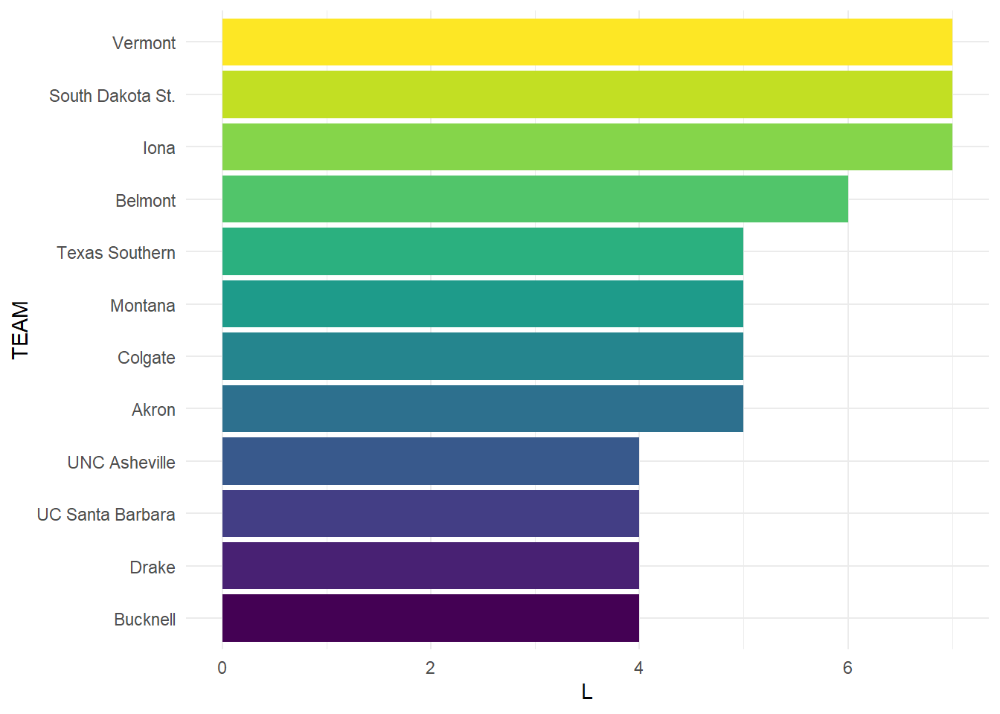
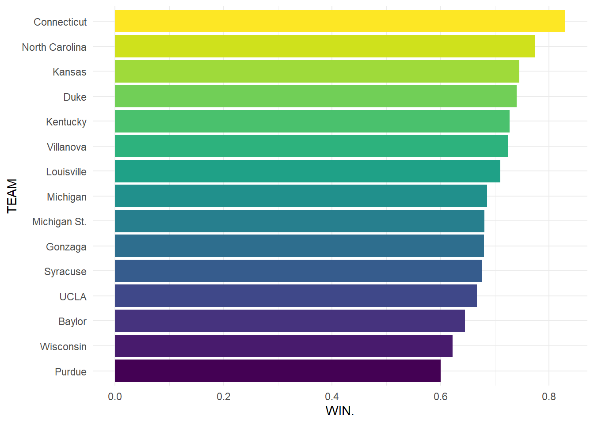
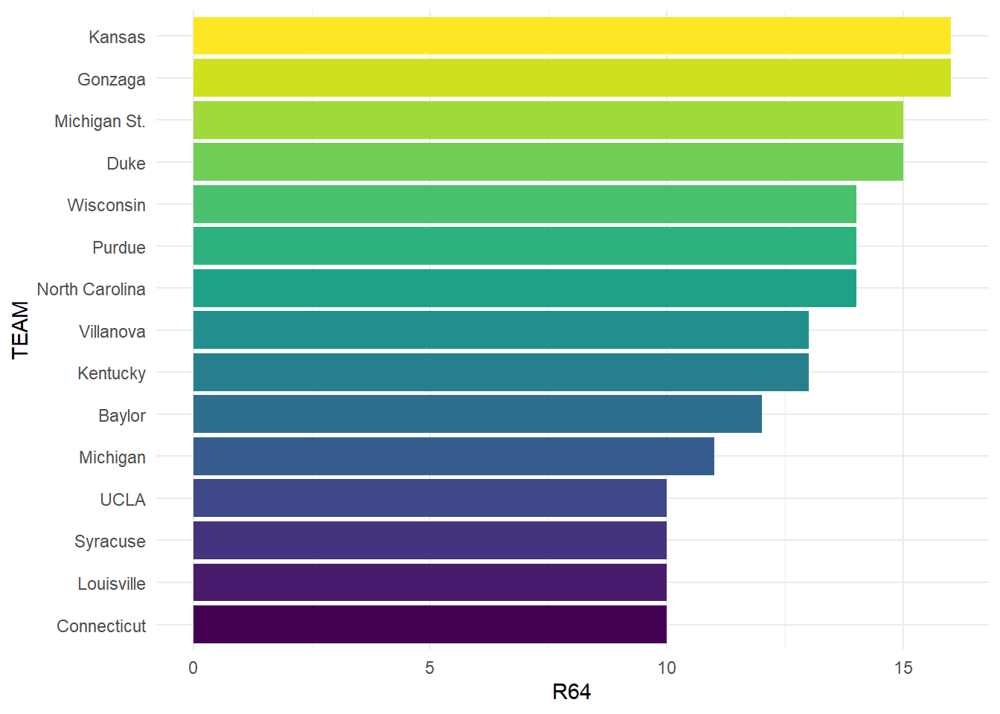
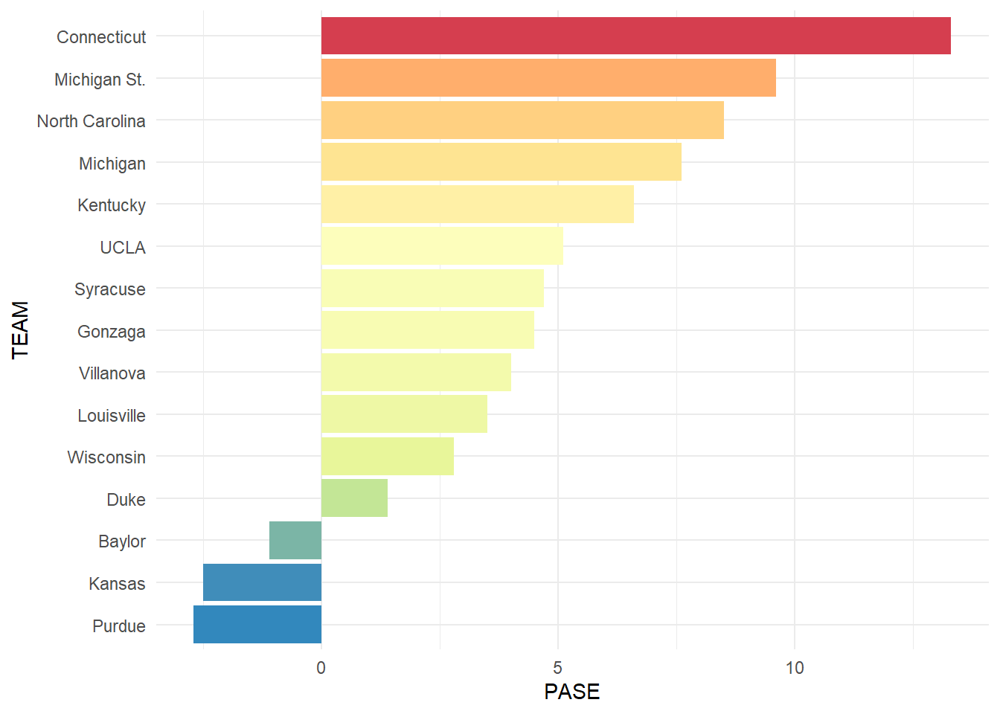
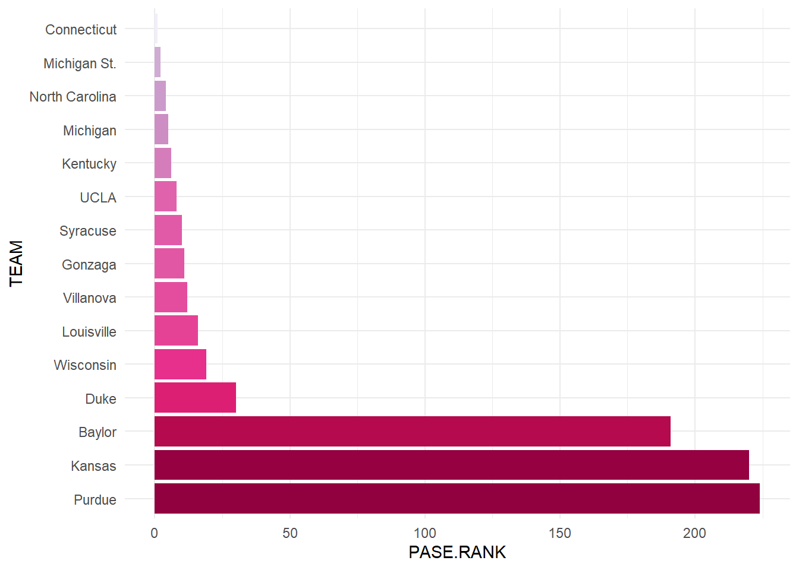
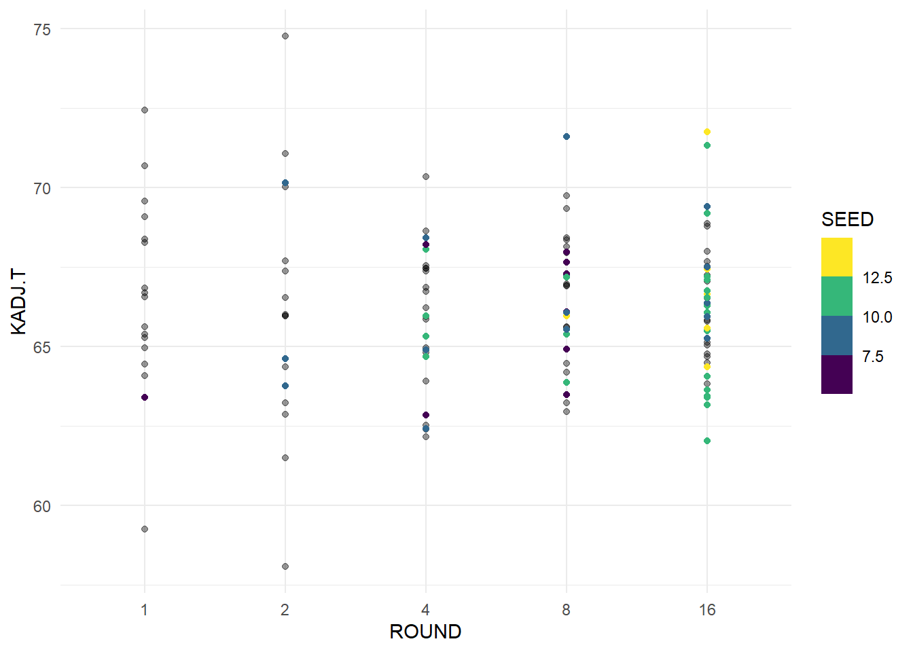
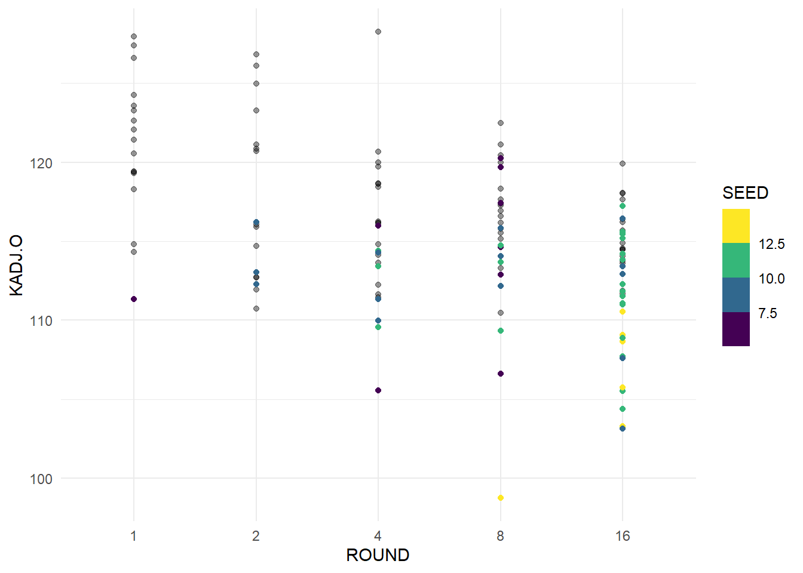
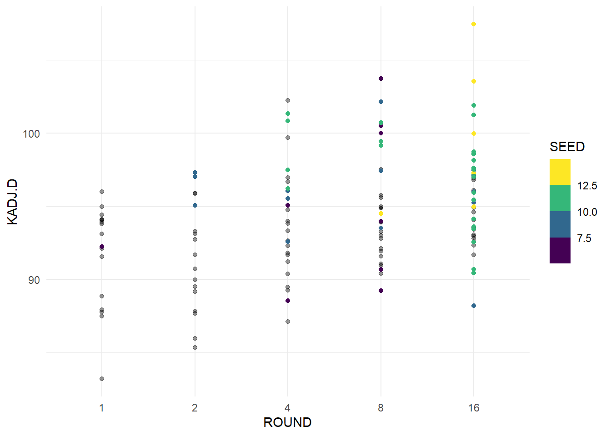
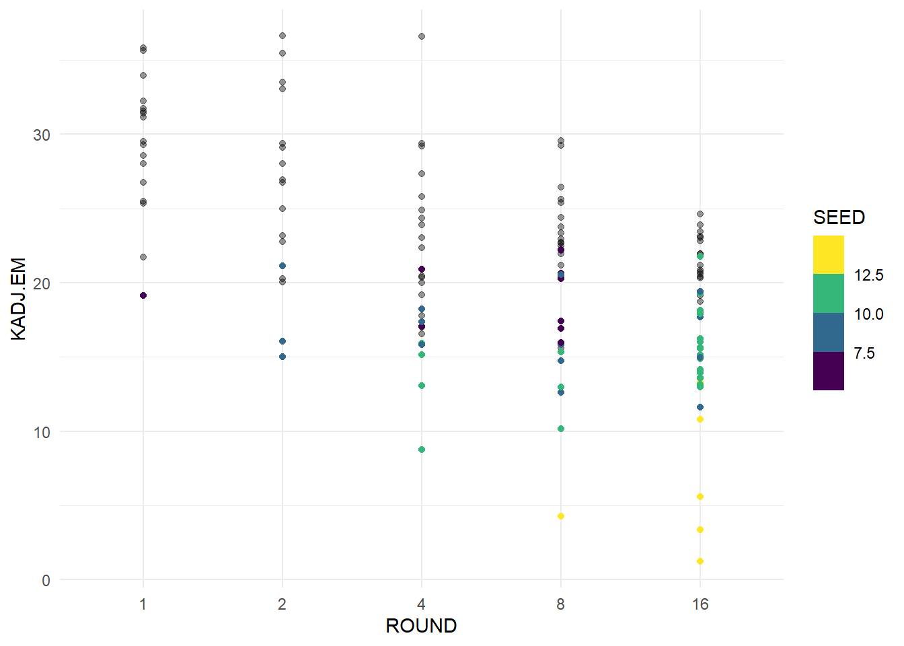
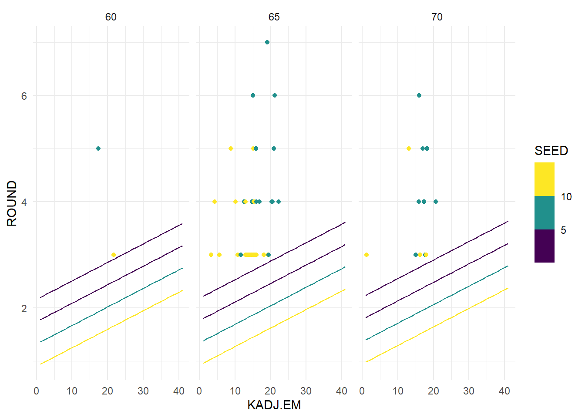

library(tidyverse)
library(here)
library(ggeffects)
library(broom)
team_data <- read.csv(here('docs/posts/0311_blog/data/team_results.csv'))Hello and Welcome to our March Data Visualization Blog Post. Today we will be looking at data for the NCAA Basketball Tournament, commonly know as March Madness. This tournament take 68 of the top men’s and women’s basketball teams and places them in a single elimination tournament in order to find their 2 nation champions. The tournament always has incredible upsets, Cinderella stories, drama, and 67 teams heading home empty handed.
The first data set we will look at has data from each team to appear in the tournament at least 1x. This dataset has 242 rows, representing each of the 242 men’s basketball teams to appear in March Madness after 2008. It has 20 columns with the columns of interest listed below, there are some advanced statistics we will ignore like PAKE or PASE which compare schools performances with their expected kenpom rating(basketball efficiency rating) or their seed.
TEAM: Team Name GAMES: Tournament Games Played W: Games Won L: Games Lost WIN.: Win Percentage R64, R32, S16, E8, F4, F2: Number of times a team has been to this round CHAMP: Tournament Wins TOP2: Times a 1 or 2 seed was awarded PAKE - Performance Against KenPom Adjusted Efficiency (KADJ EM) Expectations; Measures teams’ tournament wins relative to KenPom Adjusted Efficiency Ratings. PASE - Performance Against Seed Expectations; Measures team’s tournament wins relative to the historical average for a given seed.
The other data set we will consider a KenPom Bart Torvik data set that has different ratings and analytics around a teams performance, and their results for the season. For this data set there are 1147 rows which each represent a different appearance in March Madness. There are 100+ columns which include team, conference, result, section of the bracket, and countless statistics relating to team performances and ranks.
kenpom_df <- read.csv(here('docs/posts/0311_blog/data/kenpom.csv'))The March Madness Tournament is full of losers, 67 of the 68 teams that make the dance end up going home without winning the tournament, but a number of teams that have made the dance have never one a single game. We will start by looking at all the teams that have never won a single game with the most appearances.
losers <- team_data |> filter(W == 0) |>
arrange(desc(L)) |> slice(1:12) |>
mutate(TEAM = fct_reorder(TEAM, L))ggplot(data = losers, aes(x = TEAM, y = L)) +
geom_col(aes(fill = TEAM), show.legend = FALSE) +
coord_flip() +
scale_fill_viridis_d() +
theme_minimal()
Besides these 12 teams, there are 49 teams that have lost 2 games without a win, and 103 teams total with no wins. The fact that 103 of 242 teams have never won a game. This is 42.56% of teams who have made a tournament appearance since 2008 have not won a game. Iona, UVM, and South Dakota State have made the tournament an astonishing 7x without a win, always losing in the first round. Next we will look at some of the more successful teams in the tournament.
We will consider teams with at least 20 wins since 2008, and look at their success and losses during that time.
team_data |> filter(W >= 20) TEAM.ID TEAM PAKE PAKE.RANK PASE PASE.RANK GAMES W L WIN. R64
1 14 Baylor 0.2 79 -1.1 191 31 20 11 0.645 12
2 40 Connecticut 10.8 2 13.3 1 35 29 6 0.829 10
3 50 Duke 3.1 19 1.4 30 50 37 13 0.740 15
4 68 Gonzaga 3.4 16 4.5 11 50 34 16 0.680 16
5 86 Kansas 3.9 14 -2.5 220 55 41 14 0.745 16
6 90 Kentucky 5.3 8 6.6 6 44 32 12 0.727 13
7 102 Louisville 1.8 27 3.5 16 31 22 9 0.710 10
8 114 Michigan 7.0 5 7.6 5 35 24 11 0.686 11
9 115 Michigan St. 8.0 3 9.6 2 47 32 15 0.681 15
10 135 North Carolina 11.7 1 8.5 4 53 41 12 0.774 14
11 167 Purdue -2.6 224 -2.7 224 35 21 14 0.600 14
12 196 Syracuse 5.6 6 4.7 10 31 21 10 0.677 10
13 212 UCLA 4.5 10 5.1 8 30 20 10 0.667 10
14 228 Villanova 4.8 9 4.0 12 40 29 11 0.725 13
15 240 Wisconsin 1.5 31 2.8 19 37 23 14 0.622 14
R32 S16 E8 F4 F2 CHAMP TOP2 F4. CHAMP.
1 9 5 3 1 1 1 2 82.50% 33.60%
2 6 5 5 5 4 4 2 86.30% 49.10%
3 13 10 7 3 2 2 11 97.80% 62.60%
4 15 10 5 2 2 0 6 97.40% 68.70%
5 16 9 7 4 3 2 12 98.80% 73.30%
6 10 8 7 4 2 1 6 96.90% 63.80%
7 7 6 5 2 1 1 3 89.90% 48.70%
8 9 7 4 2 2 0 3 75.90% 26.50%
9 13 9 5 4 1 0 4 86.70% 34.20%
10 13 10 7 5 4 2 9 96.70% 55.60%
11 10 7 2 1 1 0 3 85.70% 32.30%
12 9 7 3 2 0 0 2 69.80% 20.80%
13 9 7 2 2 0 0 2 74.90% 26.30%
14 11 6 4 4 2 2 7 92.90% 55.10%
15 11 7 2 2 1 0 2 81.90% 31.20%There are 15 teams that have won at least 20 games during this period, and we will consider their success in the tournament overall with a few different metrics.
win_pct <- team_data |> filter(W >= 20) |>
arrange(desc(WIN.)) |> mutate(TEAM = fct_reorder(TEAM, WIN.))ggplot(data = win_pct, aes(x = TEAM, y = WIN.)) +
geom_col(aes(fill = TEAM), show.legend = FALSE) +
coord_flip() +
scale_fill_viridis_d() +
theme_minimal()
Here we can see that UConn has the highest win percentage in the big dance, which makes sense when considering their reputation as a dominant force in College Basketball. All of the teams that appear in this group are often top seeded teams who make deep runs, winning multiple games in most of their appearances. We will next look at how many times each of these teams has appeared in the tournament to see if there are programs that make more out of their appearance than others.
appearance <- team_data |> filter(W >= 20) |>
arrange(desc(R64)) |> mutate(TEAM = fct_reorder(TEAM, R64))ggplot(data = appearance, aes(x = TEAM, y = R64)) +
geom_col(aes(fill = TEAM), show.legend = FALSE) +
coord_flip() +
scale_fill_viridis_d() +
theme_minimal()
Looking at this plot we can see that UConn makes the most of their appearances, tied for the least among this group. It should be noted that bids to the tournament are guaranteed to the conference champion from each D1 basketball conference, leaving 31 teams with an automatic bid. Most of these teams come from leagues that earn multiple at-large bids, which are selected by the March Madness selection committee. Schools like Kansas, UConn, Syracuse, Michigan St., UNC, Duke, and most others come from very competitive conferences with essentially guaranteed multiple bids. Gonzaga is unique where they have 1 team that is consistently competitive with them, but they frequently win their conference and earn an automatic bid with a lack of competition. Next we will look at the performance of these teams against their seed, to see if these teams tend to be over or under seeded.
PASE or Performance Against Seed Expectations take the wins of a team, and compares that to the wins that would be expected from that seed. For example, a 1 seed would be expected to win more games than an 8 seed, so if each won 2 games, the 8 seed would have a positive PASE, while the 1 seed would likely be negative.
pase_tot <- team_data |> filter(W >= 20) |>
arrange(desc(PASE)) |> mutate(TEAM = fct_reorder(TEAM, PASE))ggplot(data = pase_tot, aes(x = TEAM, y = PASE)) +
geom_col(aes(fill = PASE), show.legend = FALSE) +
coord_flip() +
scale_fill_distiller(type = "div", palette = "Spectral") +
theme_minimal()
From this plot we can see which teams get hot during the tournament and outperform the rest of their season. We can also see the teams that tend to under perform and bounce out of the tournament early. UConn once again rises to the top, and explains why they have one of the highest win percentages and a lower appearance total. They have made several memorable runs including their Most of these teams are quite successful throughout March, and show that perhaps they should even be seeded higher. Now we will compare their overall rank in the PASE category against all teams in March.
pase_rnk <- team_data |> filter(W >= 20) |>
arrange((PASE.RANK)) |> mutate(TEAM = fct_reorder(TEAM, desc(PASE.RANK)))ggplot(data = pase_rnk, aes(x = TEAM, y = PASE.RANK)) +
geom_col(aes(fill = PASE), show.legend = FALSE) +
coord_flip() +
scale_fill_distiller(type = "seq", palette = "PuRd") +
theme_minimal()
Here we can see that the top winning teams are some of the top overall PASE teams as well, showing that they consistently outperform their seed year after year. The teams at the bottom of our group have impressively high ranks, meaning they under perform worse than many other teams in this metric. This is likely because they tend to be highly seeded, and don’t live up to the expectations. An interesting note about the rank is that the more times you have attended the tournament, the more likely you are to be a high or low rank, due to the adding of PASE from each appearance. Teams with more appearances and good seeds can have lower scores than a team has only appear once or twice with a low seed. The high PASE totals also come from having more appearances, it takes more than a couple good runs to get a high total. Now we will move on and look at how lower seeded teams perform in March and if there are any indicators of good performances we can identify.
We will start by identifying “Cinderella” teams, which we will identify as a 10+ seed making the Sweet 16, and a 6+ seed making the Elite 8. By these points in the tournaments, teams will likely have 2+ upsets and have moved on to the 2nd weekend of competition. Teams seeded higher than this can also make impressive runs, but we want to look for teams that are very overlooked outperforming their expectations.
cinderellas <- kenpom_df |> filter((SEED >= 10 & ROUND <= 16) | (SEED >= 6 & ROUND <= 8)) |> mutate(ROUND = as.factor(ROUND))We have 54 teams who fit our criteria and next we will plot the Round reached with a few different analytics to see if there are any correlations between making a deep run and certain statistics. To compare these statistics to the overall group, we will find the average statistics of each of these from a few different edition for teams to reach each round. For example, we will have a point for the average Tempo for the 2025 for teams that made the round of 16.
avg_kenpom <- kenpom_df |> group_by(YEAR, ROUND) |>
summarise(KADJ.T = mean(KADJ.T), KADJ.O = mean(KADJ.O),
KADJ.D = mean(KADJ.D), KADJ.EM = mean(KADJ.EM)) |>
filter(ROUND <= 16) |>
mutate(ROUND = as.factor(ROUND))`summarise()` has grouped output by 'YEAR'. You can override using the
`.groups` argument.The statistics we will look at are Adjusted KenPom Tempo, Offensive Efficiency, Defensive Efficiency, and Efficiency Margin. KADJ.T measures possessions per game after adjusting for opponent pace, KADJ.O measures points scored per 100 possessions after adjusting for opponent defenses and game location, KADJ.D measures points allowed per 100 possessions after adjusting for opponent offenses and game location, and KADJ.EM measures the difference between KenPom Adjusted Offensive Efficiency and KenPom Adjusted Defensive Efficiency.
ggplot(data = cinderellas, aes(x = ROUND, y = KADJ.T)) +
geom_point(data = avg_kenpom, aes(x = ROUND, y = KADJ.T), alpha = 0.4) +
geom_point(aes(color = SEED)) +
theme_minimal() +
scale_color_viridis_b()
From this plot we can see that there is no real trend in our Cinderella teams, we can see that teams tend to have an adjusted tempo around 66. As you get later into the tournament there are no outliers from our Cinderella teams, but other teams tend to have more of and efficiency spread.
ggplot(data = cinderellas, aes(x = ROUND, y = KADJ.O)) +
geom_point(data = avg_kenpom, aes(x = ROUND, y = KADJ.O), alpha = 0.4) +
geom_point(aes(color = SEED)) +
theme_minimal() +
scale_color_viridis_b()
From this plot, we can see that in later rounds, teams tend to be more efficient on offense, which makes a lot of sense when considering that scoring more points on fewer possessions makes it harder for your opponent to keep up unless they are also efficient. The lower seeds tend to have lower adjusted offensive efficiency, as we can see yellow dots towards the bottom, but they could have some unexpected games or play better defense. Next we will look at our adjusted defensive efficiency.
ggplot(data = cinderellas, aes(x = ROUND, y = KADJ.D)) +
geom_point(data = avg_kenpom, aes(x = ROUND, y = KADJ.D), alpha = 0.4) +
geom_point(aes(color = SEED)) +
theme_minimal() +
scale_color_viridis_b()
Here we can see that teams with better adjusted defensive efficiency advance further in the tournament, and that the same trend exists in our Cinderella teams. We again see that our highest seeded teams have a worse adjusted defensive efficiency and as teams advance further it tends to be better. We will look at the margin between the two statistics next, to see if there are teams that balance our good offense and poor defense.
ggplot(data = cinderellas, aes(x = ROUND, y = KADJ.EM)) +
geom_point(data = avg_kenpom, aes(x = ROUND, y = KADJ.EM), alpha = 0.4) +
geom_point(aes(color = SEED)) +
theme_minimal() +
scale_color_viridis_b()
From this plot we can see a clear trend of teams with high adjusted efficiency margin having great success in March. This appears to be a very strong indicator of a deep run in March. We can see that teams with lower seed do have lower efficiency margin, and likely have stronger performances to make their run in March. Finally we will try and create and visualize a predictor for how far a team will advance based on their tempo and efficiency. We will change the ROUND variable and reverse it for the model to make the scale for reaching each round even. The round of 64 will become 1, 32 becomes 2 and so on. We will also use the SEED of teams to see if that is an effective predictor.
round_df <- kenpom_df |> mutate(ROUND = case_when(ROUND == 64 ~ 1,
ROUND == 32 ~ 2,
ROUND == 16 ~ 3,
ROUND == 8 ~ 4,
ROUND == 4 ~ 5,
ROUND == 2 ~ 6,
ROUND == 1 ~ 7
))
round_lm <- lm(ROUND ~ KADJ.T + KADJ.EM + SEED, data = round_df)
round_lm |> tidy()# A tibble: 4 × 5
term estimate std.error statistic p.value
<chr> <dbl> <dbl> <dbl> <dbl>
1 (Intercept) 2.03 0.769 2.65 8.26e- 3
2 KADJ.T 0.00445 0.0106 0.420 6.75e- 1
3 KADJ.EM 0.0349 0.00883 3.95 8.28e- 5
4 SEED -0.105 0.0167 -6.29 4.52e-10Looking at our model, Adjusted Efficiency Margin appears to be a strong predictor of how deep a team makes it, while Adjusted Tempo is not very strong. SEED is also a strong predictor which makes sense when considering that higher seeded teams are playing lower seeded teams, and seed is based on season performance. We will now plot our model along with data from our Cinderella teams.
round_pred <- ggpredict(round_lm, terms = c("KADJ.T [60:70, by = 5]", "KADJ.EM [0:40]",
"SEED [1:16]")) |>
as.data.frame(terms_to_colnames = TRUE) |>
as_tibble() |>
mutate(KADJ.EM = as.numeric(KADJ.EM),
SEED = as.numeric(SEED)) |>
filter(SEED == 1 | SEED == 5 | SEED == 9 | SEED == 13)cinderellas2 <- cinderellas |>
mutate(ROUND = case_when(ROUND == 16 ~ 3,
ROUND == 8 ~ 4,
ROUND == 4 ~ 5,
ROUND == 2 ~ 6,
ROUND == 1 ~ 7)) |>
mutate(KADJ.T = case_when(KADJ.T <= 62.5 ~ 60,
KADJ.T >= 67.5 ~ 70,
(KADJ.T < 67.5 & KADJ.T > 62.5) ~ 65))
ggplot(data = round_pred) +
geom_point(data = cinderellas2, aes(x = KADJ.EM, y = ROUND, color = SEED)) +
geom_line(aes(x = KADJ.EM, y = predicted, group = SEED, color = SEED)) +
facet_wrap(~ KADJ.T) +
scale_color_viridis_b() +
theme_minimal()
We used our strategies of factoring and coloring so show how our different variables affect the model in this example. Here we can see that our Cinderella teams completely outperform our model. As we can see, there is a trend where increasing Efficiency Margin correlates with making later rounds in the tournament, but there is an incredible over performance from our teams. I believe the reason the model is so off is because it is impossible to factor in games where teams come out of nowhere and beat teams that are significantly better on paper. Teams like St. Peters beat several top teams in the country as a 16 seed and would be unlikely to reach the 2nd round in our model. Even an efficient 1 seeded team would only be expected to reach the 3rd or 4th round according to our model, when a team like that would be hoping to win the tournament. I hope that this model and project helped to represent the hopelessness in crafting a perfect March Madness bracket, and that simply winning a game in the tournament is a huge success.